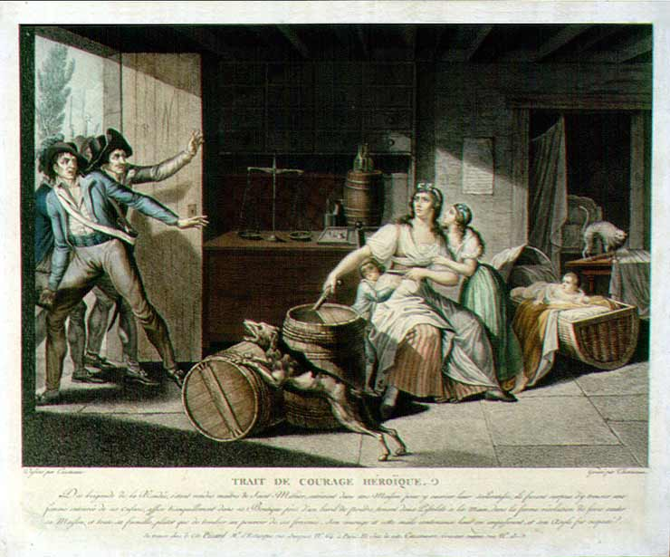

 |
| 22.
Trait de Courage Héroïque [An Example of Heroic Courage]
Caption: Des brigands de la Vendée, s’étant rendus maîtres de Saint-Mithier, entrèrent dans une maison pour y exercer leur scélératesse ; ils furent surpris d’y trouver une femme entourée de ses enfants, assise tranquillement dans sa boutique près d’un baril de poudre, tenant deux pistolets à la main, dans la ferme résolution de faire sauter sa maison et toute sa famille, plutot que de tomber au pouvoir de ces forcenés. Son courage et cette mâle contenance leur en impofèrent, et son asile fut respecté.Se trouve chez le Cit. Pézard, M[archan]d d’Estampes, rue Jacques no. 64 à Paris. Et chez le Cit. Cazenave, graveur, même rue no. 13. Source: Museum of the French Revolution 88.44 |